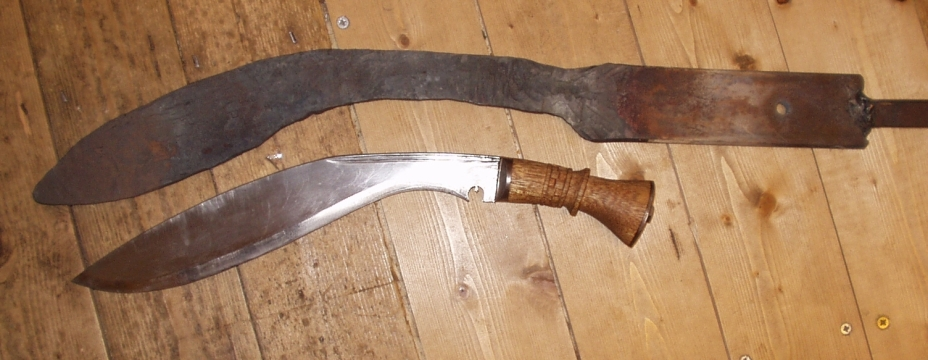
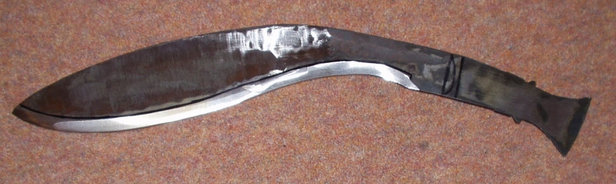
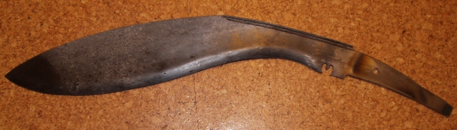
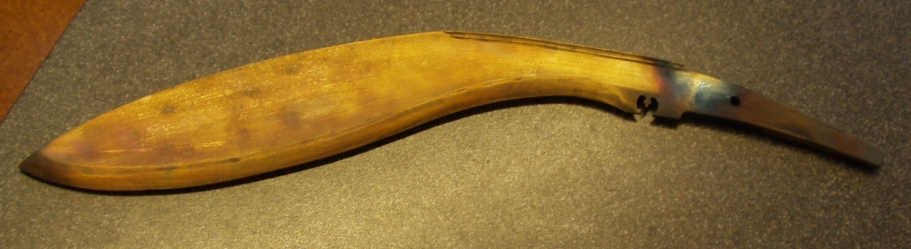
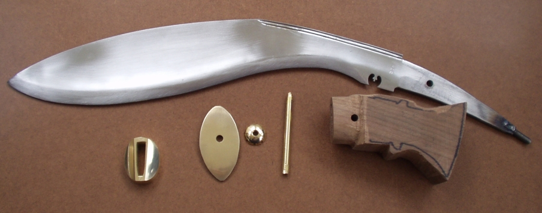
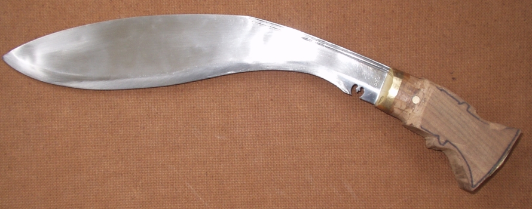
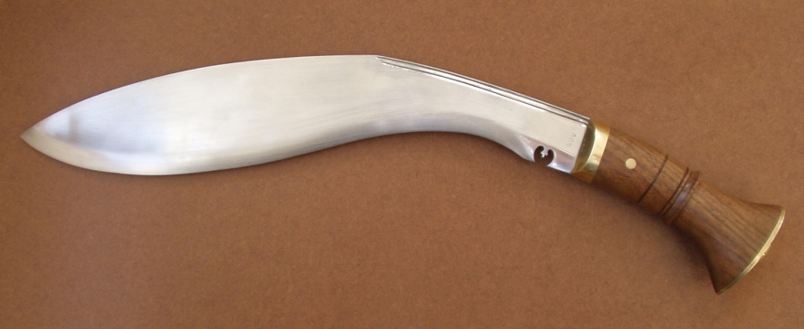

A Kukri
The photo above is the rough forging, next to an original kukri.
January 2004
I have always loved kukris, partly it's the appearance, and partly the amazing ability to chop through branches with so little effort. I have looked for a good original kukri, but never found one of good quality. Consequently, I decided to make my own.
I used a piece of truck spring, and forged it to profile with the help of Merv. A sledge hammer was required! We found out how they curve the blade though, as we narrowed the blade at the curve, the end just bent up automatically. In fact we had to keep straightening the blade.
The guard is solid brass, the wood American Black Walnut, and I used both a pin and a nut on the end of the tang. I certainly don't want the blade coming loose, as it is 13 inches long.
This is after some grinding, before I decided to change the tang design
After hardening
After tempering at 400F
Ready for assembly
Before handle shaping
Finished apart from sharpening